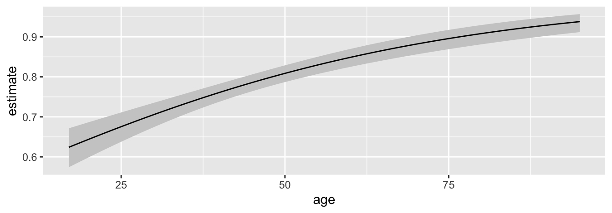
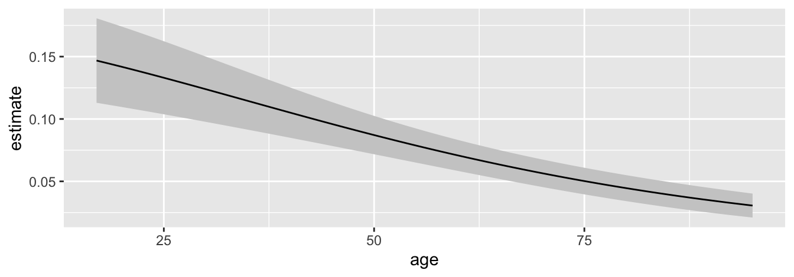

Your task this semester: design and run a 60-minute workshop on a particular statistical model.
You will complete this task in (ideally) teams of two.1
1 If we have an odd number, I will likely want one team of three rather than one person working alone, but we should discuss.
Why?
I designed this project to help you develop as a researcher and teacher.
As PhD students, you aren’t just learning statistical models so you can pass my exams. You’re preparing to explain them to others, whether in conference presentations, your job talk, or classroom lectures.
Teaching a concept deepens your own mastery. It forces you to develop a thorough understanding of an idea and constantly re-engage with your understanding.
The workshop also mirrors important professional activities: conference presentations and job talks, teaching, collaboration, and reproducible research. It’s easy to think of a polished presentation as “mere aesthetics,” but communication is important for scientists!
Topics
I suggest the following topics:
Modeling binary outcomes.
Modeling unordered categorical outcomes.
Modeling ordered categorical outcomes.
Modeling count outcomes.
Materials
Your workshop should consist of the following materials:
A Read-Ahead Document
A document (HTML or PDF) that participants can read and code they can run in 5-10 minutes before attending the workshop.
This document serves two purposes.
First, it orients participants to the material and sparks interest and curiosity.
Second, it describes how to install any software needed for the workshop so that folks can set up their computers before attending. You should give instructions for installing the software and code they can use to test the installation (i.e., “make sure the following code runs and produces _____”.)
You should write a script and ask them to run it so that it sets up their computer with everything they need. For example, if you want to use {crdata}, then you need to have them run:
Be aware that some students might use RStudio via Posit Cloud rather than locally.
This document is not a substitute for the workshop. It is a lightweight document that reduces friction and builds interest.
Slides
A set of slides to show during the presentation.
The slides should support a roughly 15-minute conceptual lecture portion of the workshop.
The slides do not need to be comprehensive.2 Perhaps 6-8 slides are enough. Use slides to emphasize the big ideas or show visuals.3 (It’s fine to use an analog or digital chalkboard for portions of the lecture!)
2 The take-home notes can include the supporting details.
3 Again, reserve complicated equations for handouts.
Two Examples
Two diverse examples from political science.
Use the first example as a live-coding example for your workshop. Introduce all the code for the second example here.
Use the second example as a hands-on exercise for your participants. Participants should be able to adapt the code from the first example here.
Given that you only have a few minutes, these examples need to be simple.
The bit below seems about right for a logit model, for example. Regardless, it cannot be 300 lines of R code or 10+ commands. Fit, EV, and FD seems about right.
# load packageslibrary(tidyverse)library(marginaleffects)# load data (install once with devtools::install_github("jrnold/ZeligData"))turnout <- ZeligData::turnout |>glimpse()
# fit logit modelf <- vote ~ age + educate + income + racefit <-glm(f, data = turnout, family = binomial)summary(fit)
Call:
glm(formula = f, family = binomial, data = turnout)
Coefficients:
Estimate Std. Error z value Pr(>|z|)
(Intercept) -3.034261 0.325959 -9.309 < 2e-16 ***
age 0.028354 0.003461 8.193 2.54e-16 ***
educate 0.175634 0.020333 8.638 < 2e-16 ***
income 0.177112 0.027158 6.521 6.96e-11 ***
racewhite 0.250798 0.146466 1.712 0.0868 .
---
Signif. codes: 0 '***' 0.001 '**' 0.01 '*' 0.05 '.' 0.1 ' ' 1
(Dispersion parameter for binomial family taken to be 1)
Null deviance: 2266.7 on 1999 degrees of freedom
Residual deviance: 2024.0 on 1995 degrees of freedom
AIC: 2034
Number of Fisher Scoring iterations: 5
# generate predictions: expected value across age, other variables at mean or modep <-predictions( fit,newdata =datagrid(age = unique, grid_type ="mean_or_mode") )ggplot(p, aes(x = age,y = estimate,ymax = conf.high,ymin = conf.low)) +geom_ribbon(fill ="grey80") +geom_line()

# generate comparisons: first difference as educate moves from 12 to 16 yearsc <-comparisons( fit,variables =list(educate =c(12, 16)),newdata =datagrid(age = unique, grid_type ="mean_or_mode") )ggplot(c, aes(x = age,y = estimate,ymax = conf.high,ymin = conf.low)) +geom_ribbon(fill ="grey80") +geom_line()

A Take-Home Handout
Take-home handout that summarizes all the content from the workshop. This document is a substitute for the workshop. You can easily write a reproducible document in Quarto.
It should cover the conceptual and mathematical ideas from the lecture, but in somewhat greater detail. Something like two pages of text seems about right, excluding large equations, figures, and tables.
It should include the two examples worked out in detail. In Quarto, it’s easy to mix the prose, code, equations, and figures, so use those features to clearly explain the concepts and software. Make sure to focus on the important points—it’s easy to make pages and pages of relatively unimportant code and output. The length of this section will depend heavily on the nature of the examples, but each example should load and inspect data, fit models, compute quantities of interest, and plot the quantities of interest.
It should include a few references in case participants want to learn more. For each reference, write a few words about why participants might use that resource.
Time and Place
I want students to take the lead on choosing the exact time and place for the workshop and a rehearsal, reserving the space, and recruiting participants (e.g., first-year PhD students, other PhD students, RIBC students, students from other departments, etc.). We want about 10 participants of similar background.
Extra Credit for Participants
RIBC students will be offered extra credit in their course for attending a workshop. FSU has no university-wide rule about extra credit, but two policies shape how we offer it. The University Attendance Policy requires that excused absences be accommodated “in a way that does not arbitrarily penalize students who have a valid written excuse,” and a course’s grading statement is fixed once its syllabus is published, so extra credit must be available on the same terms to every student in that course. In practice, an extra-credit opportunity tied to attending an event outside class time has to come with an equivalent alternative for students who cannot attend.
So each team must design an alternative assignment that a student who cannot attend your workshop can complete instead. It should take about as much effort as attending (roughly an hour) and rely only on your take-home handout—for example, working through your second example from the handout and submitting the code and a short write-up. Describe the alternative assignment at the end of your handout and include it with your drafts of all materials.
Suggested Workshop Structure
5 min: Opening. Introduce good example. Give the audience a question.
15 min: Lecture. Discuss any important conceptual ideas.
15 min: Example 1. Cover a numerical example in detail. Discuss concepts, R code, and substantive conclusions. Recommend live coding. Remember to do relatively little here, but do it thoroughly. Fit a model, do one predictions(), and do one comparisons(). That’s five minutes per tasks, which seems about right if you explain things slowly and carefully.
20 min: Example 2. Allow the audience to work through an example on their own. You’ll need to keep this example minimal, simple, and brief so that participants can ask questions, troubleshoot, and still finish. Perhaps supply starter or skeleton code. This example should be adaptable from Example 1.
5 min. Wrap. Revisit and reemphasize the big ideas.
Scaffolding, Due Dates, and Weights
The percentages below are shares of the workshop component, which is 15% of the course grade.
Oct. 19: Initial outline (10%). Sketch out the take-home handout. Have 2-3 ideas for examples. Summarize the material you plan to include (and, implicitly, exclude). Graded as pass/fail.
Oct. 26: Submit drafts of all materials (25%). Read-ahead document, slides, and take-home handout. Graded using rubric below (where applicable).
Nov. 09: Rehearsal (15%). Before class on Nov. 10, arrange for a rehearsal of your workshop. I suggest recruiting some or all of your classmates. Graded as pass/fail.
Nov. 24: Workshop (50%). Give your workshop before Thanksgiving break, ideally between Nov. 10 and Nov. 24. Graded using rubric below.
Workshop Rubric
The rubric below characterizes an excellent (100% credit), acceptable (80%), and poor (60%) workshop.
Dimension
Excellent
Acceptable
Poor
Conceptual Clarity
Accurately explains the model, including key details, intuition, and interpretation. Accessible but rigorous. Audience leaves knowing when and why to use the method.
Mostly correct explanation with minor gaps or over-reliance on technical detail. Audience may grasp mechanics but not the “why.”
Explanation is confused, incomplete, or incorrect. Audience unclear on what the model is or when to use it.
Examples (Live Coding & Hands-On)
Two well-chosen, diverse political science examples. Live coding is clear and reproducible and links model, code, and conclusions. Hands-on exercise is achievable in ~15–20 minutes with starter code/data.
Relevant but uneven examples (one strong, one weak; too complex; or loosely tied to political science). Coding works but may be hard to follow. Hands-on exercise somewhat too hard or easy.
Poorly chosen, irrelevant, or not reproducible. Coding fails or confuses. Hands-on exercise missing or unusable.
Materials (Read-Ahead, Slides, Handout)
Read-ahead is short, engaging, and practical. Slides emphasize big ideas and visuals. Handout is reproducible, integrates text/code/figures/references, and works as a standalone resource.
Materials are present but uneven (too long read-ahead, overly dense slides, incomplete or cluttered handout). Some reproducibility issues.
Materials missing, incoherent, or cannot be followed independently.
Delivery
Workshop stays on time and follows structure. Delivery is confident, clear, and interactive. Live coding is smooth with backup plan. Audience is engaged and participates.
Delivery understandable but uneven (rushed, monotone, or overly technical). Some interaction but limited engagement. Minor coding/timing issues.
Workshop disorganized, unclear, or off schedule. Little to no interaction. Technical failures derail session.
Professionalism
Teamwork is balanced. Materials are polished and proofed. Overall presentation mirrors professional standards (conference/job talk quality).
Teamwork uneven or materials lack polish (typos, sloppy figures, unclear code). Still functional overall.
One person carries the work or team uncoordinated. Materials unprofessional, incomplete, or sloppy.
AI
AI is always allowed, but you must declare any use of AI tools that shaped the work. See more here.
For the workshop, AI is even encouraged for review and error checking. However, you are responsible for the content and must declare usage. In this course, we will borrow AJPS’s policy, which I have posted and annotated. This annotated policy describes precisely what “responsible for the content” and “must declare usage” mean.
Document your AI usage in a single consolidated statement at the end of the take-home handout, covering how the team used AI in developing each workshop component (read-ahead document, slides, both examples, and the handout itself). If you used no AI, say so (“No AI tools were used.”).
Comments on Tools
You may use whatever software helps you design and run an excellent workshop.
I highly recommend Quarto rendered to HTML or PDF for your take-home handout.
It’s easier to make excellent slides with a WYSIWYG program like PowerPoint, but harder to update and maintain those slides. Software like Revealjs make it really easy to convert a take-home handout written in Quarto to an easy to create and maintain set of slides.
You can post materials to the web (HTML or PDF) or share materials (data, scripts, and documents) in a zipped directory via email.
Be aware that some RIBC students might use RStudio via Posit Cloud rather than locally.
Resources
Tufte’s “The Cognitive Style of PowerPoint.” [pdf]
Asher’s Even a Geek Can Speak [Amazon] and 15 Minutes Including Q&A [Amazon]
Comments on Tools
Be aware that some RIBC students might use RStudio via Posit Cloud rather than locally.